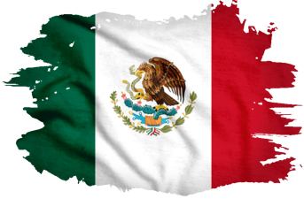

México
México, oficialmente los Estados Unidos Mexicanos, es una nación vibrante y diversa ubicada en la
región de América del Norte, compartiendo fronteras con los Estados Unidos al norte, Belice y
Guatemala al sureste. Con una rica historia que abarca desde las antiguas civilizaciones
mesoamericanas, como los aztecas y los mayas, hasta la llegada de los conquistadores españoles en el
siglo XVI, el país ha sido moldeado por una mezcla única de culturas. Su vasto territorio alberga
una variada geografía que va desde las montañas de la Sierra Madre Occidental y Oriental hasta las
extensas playas de la costa del Golfo y el Pacífico, así como la exuberante selva tropical de la
región sureste.
Además de su riqueza natural, México es conocido por su cocina distintiva, que
incluye platos como los tacos, tamales y mole, así como por sus festivales coloridos y celebraciones
tradicionales como el Día de los Muertos. La economía mexicana es una de las más grandes de América
Latina, con sectores clave como la industria manufacturera, el turismo y la agricultura. Sin
embargo, el país enfrenta desafíos como la pobreza, la corrupción y la violencia relacionada con el
crimen organizado, que continúan siendo preocupaciones importantes en su desarrollo socioeconómico y
político.